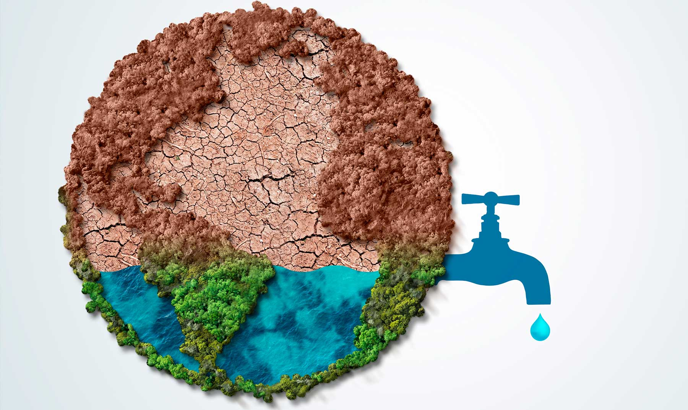
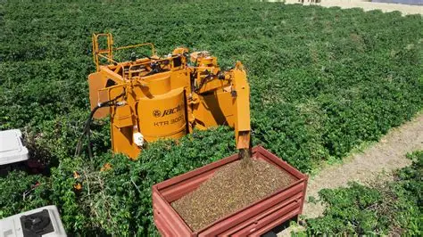
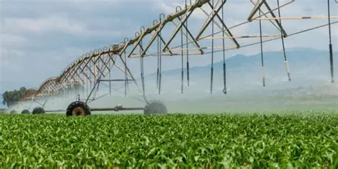

Reducción de Costos
Los sistemas automatizados permiten ahorrar tiempo y dinero al optimizar el uso de agua y energía, reduciendo gastos operativos.

Los sistemas modernos de riego permiten reducir el consumo de agua al suministrarla directamente donde se necesita, evitando pérdidas por evaporación o escurrimiento.

Al garantizar que los cultivos reciban la cantidad adecuada de agua, se mejora el rendimiento agrícola y la calidad de los productos.

El uso eficiente del agua contribuye a la conservación de recursos naturales y a la reducción del impacto ambiental.

Los sistemas automatizados permiten ahorrar tiempo y dinero al optimizar el uso de agua y energía, reduciendo gastos operativos.